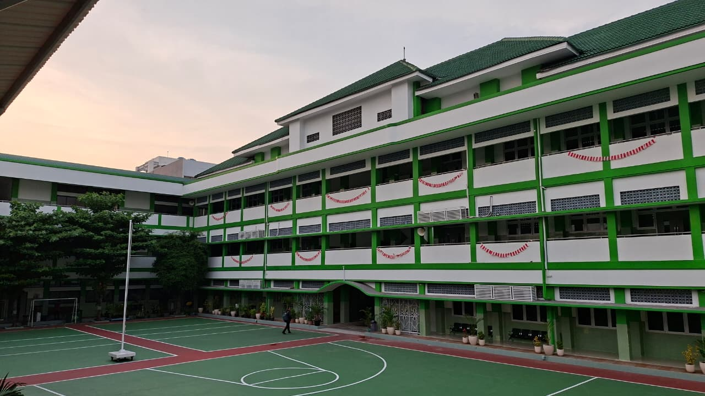
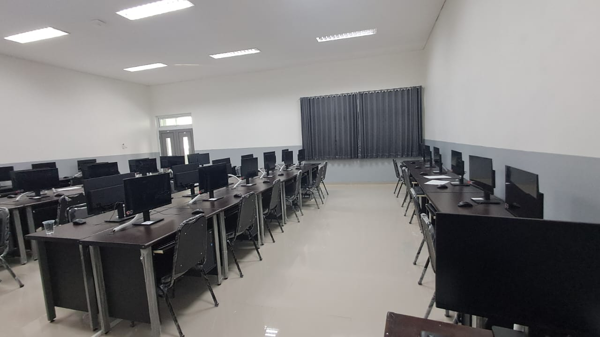
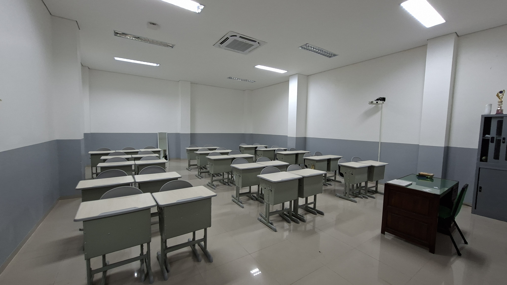
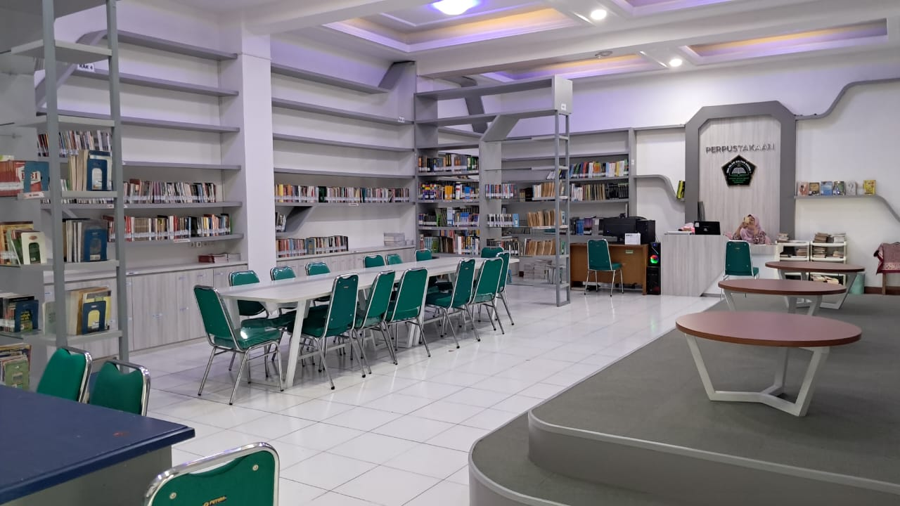
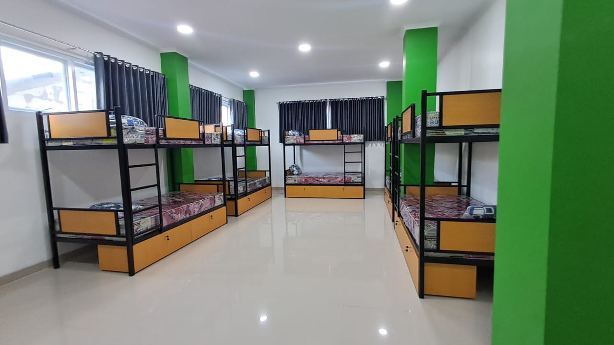
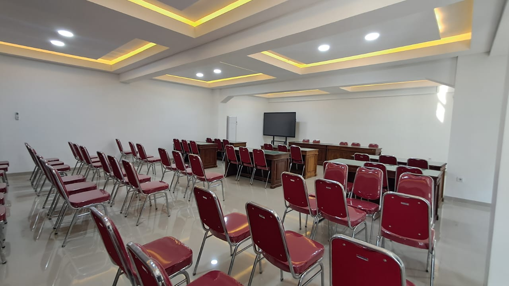

Profil SMA Islam Sultan Agung 1 Semarang
SMA Islam Sultan Agung 1 Semarang merupakan sekolah unggulan yang tidak hanya menekankan prestasi akademik, tetapi juga membangun karakter islami dan modern.
Keunggulan Sekolah
- Budaya Islami: sholat berjamaah, tadarus, dan sedekah pagi untuk meraih cita-cita.
- Prestasi akademik maupun non-akademik di tingkat kota hingga internasional.
- Menerapkan Manajemen Lembaga Berkarakter dan Sistemik (MLBS).
- Kelas Digital menggunakan iPad resmi sejak Tahun Ajaran 2024/2025.
Fasilitas Sekolah
- Setiap kelas dilengkapi 2 AC / AC central
- Area Parkir Motor & Mobil
- Smartboard TV Digital (Kelas Digital)
- Laboratorium Kimia
- Laboratorium Biologi
- Laboratorium Geografi
- Laboratorium Komputer
- Laboratorium Audio Visual & Bahasa
- Perpustakaan
- Lapangan Basket, Voli, Bulutangkis, Lompat Jauh, Hockey
- Kantin
- Ruang UKS
- Gedung 3 lantai (3 blok gedung)
- Masjid berkapasitas 1000 orang
- 2 WC Laki-laki & 2 WC Perempuan
- 2 Tempat Wudhu Laki-laki & 2 Perempuan
Galeri Foto
Berikut adalah beberapa dokumentasi fasilitas dan bangunan utama SMA Islam Sultan Agung 1 Semarang.

Gedung Utama

Lab Komputer

Ruang Kelas XII

Perpustakaan

Asrama

Aula

Ruang BK